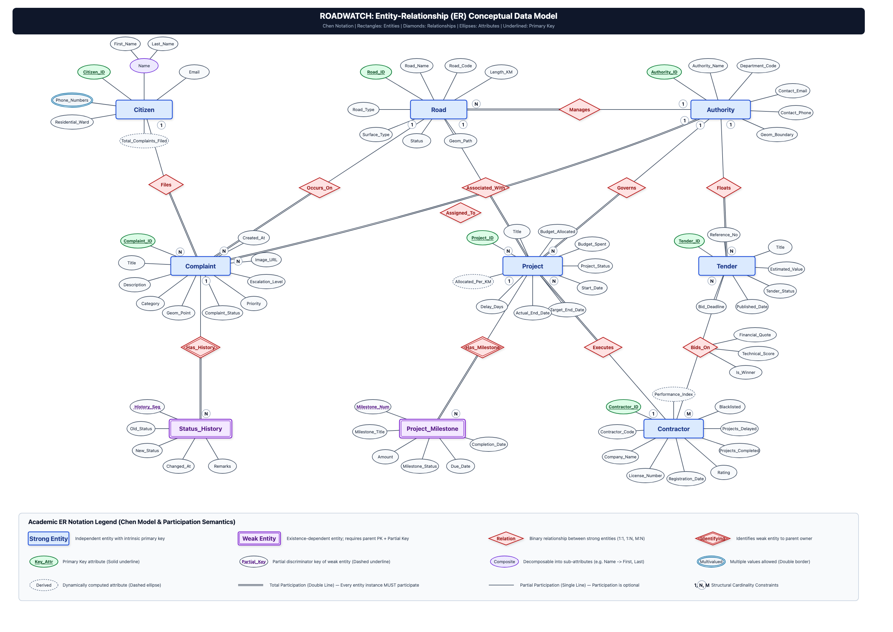

ROADWATCH — Civic Infrastructure Intelligence & Road Grievance Governance Platform
Laboratory Submission: Phase 2 & Phase 3 (Conceptual & Logical Database Design)
| * Member 1 (Team Lead): Kanak Waradkar | Roll No: 24B-CO-030 |
Email: kanakwaradkar@gmail.com |
|---|---|---|
| * Member 2: Krushna Surve | Roll No: 24B-CO-031 |
Email: krushnasurve07@gmail.com |
| * Member 3: Manjunath Subhash Gavada | Roll No: 24B-CO-035 |
Email: manjunathgavada40@gmail.com |
The Entity-Relationship model adheres strictly to classical Peter Chen conceptual modeling notation (rectangles for entities, ellipses for attributes, and diamonds for relationships). In accordance with standard database engineering methodology (Elmasri & Navathe, Silberschatz):
Underlined attributes represent primary keys. Attribute types follow standard Chen ER notation: simple (plain ellipse), composite (branched ellipses), multivalued (double ellipse), derived (dashed ellipse), and partial key (dashed underline).
Represents registered residents submitting grievances and monitoring public road transparency.
| Attribute | Type | ER Representation | Notes / Semantic Definition |
|---|---|---|---|
| Citizen_ID | Simple, Key | Solid Underline | Unique primary key identifying a citizen. |
| Name | Composite | Sub-branches | Composed of First_Name and Last_Name. |
| Simple | Plain Ellipse | Contact and authentication email address. | |
| Phone_Numbers | Multivalued | Double Ellipse | A citizen may provide multiple contact telephone numbers. |
| Residential_Ward | Simple | Plain Ellipse | Municipal residential ward identifier. |
| Total_Complaints_Filed | Derived | Dashed Ellipse | Computed via COUNT(*) from Complaint entity. |
Represents municipal corporations, public works departments (PWD), or smart city administrative bodies.
| Attribute | Type | ER Representation | Notes / Semantic Definition |
|---|---|---|---|
| Authority_ID | Simple, Key | Solid Underline | Unique primary key identifying the authority. |
| Authority_Name | Simple | Plain Ellipse | Formal administrative title (e.g., Panaji Municipal Corp). |
| Department_Code | Simple | Plain Ellipse | Standard departmental code (e.g., PWD-RD-01). |
| Contact_Email | Simple | Plain Ellipse | Official departmental escalation email. |
| Contact_Phone | Simple | Plain Ellipse | Departmental helpline telephone number. |
| Geom_Boundary | Simple | Plain Ellipse | Spatial polygon representing jurisdiction area. |
Represents physical road segments monitored and maintained within the infrastructure network.
| Attribute | Type | ER Representation | Notes / Semantic Definition |
|---|---|---|---|
| Road_ID | Simple, Key | Solid Underline | Unique primary key for the road segment. |
| Road_Name | Simple | Plain Ellipse | Common street or corridor name (e.g., MG Road). |
| Road_Code | Simple | Plain Ellipse | Official highway/arterial designation (e.g., NH-66, SH-08). |
| Length_KM | Simple | Plain Ellipse | Total segment length in kilometers (> 0.00). |
| Road_Type | Simple | Plain Ellipse | Classification category (NH, SH, MDR, City, Urban). |
| Surface_Type | Simple | Plain Ellipse | Surface composition (asphalt, concrete, pavers). |
| Status | Simple | Plain Ellipse | Current operational health (good, fair, poor, under_construction). |
| Geom_Path | Simple | Plain Ellipse | Spatial LineString representing geographic coordinates. |
Represents certified engineering and construction companies bidding on and executing road contracts.
| Attribute | Type | ER Representation | Notes / Semantic Definition |
|---|---|---|---|
| Contractor_ID | Simple, Key | Solid Underline | Unique primary key for the contractor firm. |
| Contractor_Code | Simple | Plain Ellipse | Standard vendor registration code (e.g., CON-00102). |
| Company_Name | Simple | Plain Ellipse | Registered legal commercial firm name. |
| License_Number | Simple | Plain Ellipse | State government contractor license identifier. |
| Registration_Date | Simple | Plain Ellipse | Date of initial government accreditation. |
| Rating | Simple | Plain Ellipse | Average engineering inspection score (0.00 to 5.00). |
| Projects_Completed | Simple | Plain Ellipse | Count of successfully closed road contracts. |
| Projects_Delayed | Simple | Plain Ellipse | Count of projects exceeding target end date. |
| Blacklisted | Simple | Plain Ellipse | Boolean flag barring firm from submitting bids. |
| Performance_Index | Derived | Dashed Ellipse | Auto-computed composite score (0.00 to 100.00). |
Represents sanctioned public works road construction or repair contracts.
| Attribute | Type | ER Representation | Notes / Semantic Definition |
|---|---|---|---|
| Project_ID | Simple, Key | Solid Underline | Unique primary key identifying the contract. |
| Title | Simple | Plain Ellipse | Project scope title (e.g., MG Road Asphalt Resurfacing). |
| Budget_Allocated | Simple | Plain Ellipse | Total approved public funding (> 0.00). |
| Budget_Spent | Simple | Plain Ellipse | Cumulative capital disbursed to date. |
| Project_Status | Simple | Plain Ellipse | State (planned, in_progress, completed, halted, cancelled). |
| Start_Date | Simple | Plain Ellipse | Formal project mobilization date. |
| Target_End_Date | Simple | Plain Ellipse | Contractual scheduled completion deadline. |
| Actual_End_Date | Simple | Plain Ellipse | Certified physical project handover date. |
| Delay_Days | Simple | Plain Ellipse | Net calendar days project exceeded target end date. |
| Allocated_Per_KM | Derived | Dashed Ellipse | Computed via Budget_Allocated / Length_KM. |
Represents public procurement tender notices published by authorities.
| Attribute | Type | ER Representation | Notes / Semantic Definition |
|---|---|---|---|
| Tender_ID | Simple, Key | Solid Underline | Unique primary key for the tender. |
| Reference_No | Simple | Plain Ellipse | Unique public procurement gazette reference string. |
| Title | Simple | Plain Ellipse | Scope description of work tendered. |
| Estimated_Value | Simple | Plain Ellipse | Benchmark project cost estimate (> 0.00). |
| Tender_Status | Simple | Plain Ellipse | Lifecycle state (draft, published, bid_open, awarded, cancelled). |
| Published_Date | Simple | Plain Ellipse | Date tender was made publicly available. |
| Bid_Deadline | Simple | Plain Ellipse | Closing date and time for submission of bids. |
Represents citizen-submitted defect reports regarding road damage.
| Attribute | Type | ER Representation | Notes / Semantic Definition |
|---|---|---|---|
| Complaint_ID | Simple, Key | Solid Underline | Unique primary key identifying the complaint. |
| Title | Simple | Plain Ellipse | Concise summary of the road distress. |
| Description | Simple | Plain Ellipse | Detailed defect narrative provided by the citizen. |
| Category | Simple | Plain Ellipse | Defect type (pothole, paving_defect, waterlogging, etc.). |
| Geom_Point | Simple | Plain Ellipse | Precise GPS spatial coordinate (Point(lon, lat)). |
| Complaint_Status | Simple | Plain Ellipse | State machine status (pending, routed, in_progress, resolved). |
| Priority | Simple | Plain Ellipse | Urgency score from 1 (lowest) to 5 (critical hazard). |
| Escalation_Level | Simple | Plain Ellipse | SLA breach counter (0: Normal, 1: Ward Escalated, 2: Executive). |
| Image_URL | Simple | Plain Ellipse | URI link to compressed photographic evidence. |
| Created_At | Simple | Plain Ellipse | System timestamp of grievance creation. |
Modeled as a weak entity because a milestone has no existential validity or identity apart from the specific public works project to which it belongs.
| Attribute | Type | ER Representation | Notes / Semantic Definition |
|---|---|---|---|
| Milestone_Num | Partial Key | Dashed Underline | Sequential discriminator (1, 2, 3...) within a given project. |
| Milestone_Title | Simple | Plain Ellipse | Stage label (e.g., Sub-base Compaction 50%). |
| Amount | Simple | Plain Ellipse | Financial disbursement tied to this stage. |
| Milestone_Status | Simple | Plain Ellipse | Lifecycle status (pending, in_progress, completed). |
| Due_Date | Simple | Plain Ellipse | Scheduled target date for stage inspection. |
| Completion_Date | Simple | Plain Ellipse | Actual certified engineering verification date. |
Modeled as a weak entity because historical status transitions exist solely to audit a parent complaint; they possess no independent business meaning.
| Attribute | Type | ER Representation | Notes / Semantic Definition |
|---|---|---|---|
| History_Seq | Partial Key | Dashed Underline | Sequential change number (1, 2, 3...) for that complaint. |
| Old_Status | Simple | Plain Ellipse | Previous complaint lifecycle state. |
| New_Status | Simple | Plain Ellipse | Resulting complaint lifecycle state. |
| Changed_At | Simple | Plain Ellipse | Timestamp at which the database trigger executed. |
| Remarks | Simple | Plain Ellipse | Field engineer notes or system escalation reason. |
| Relationship Name | Connecting Entities | Attributes on Relationship | Cardinality | Participation Constraints & Rationale |
|---|---|---|---|---|
| Files | Citizen ↔ Complaint | None | 1 : N | Citizen (Partial): A citizen may register without yet filing a defect. Complaint (Total): Every complaint must be filed by exactly one citizen. |
| Assigned_To | Complaint ↔ Authority | None | N : 1 | Complaint (Total): Every complaint is routed to an authority by spatial boundary. Authority (Partial): An authority may currently have zero active defects. |
| Occurs_On | Complaint ↔ Road | None | N : 1 | Complaint (Total): Every defect must occur on a registered road segment. Road (Partial): A well-maintained road may have zero complaints. |
| Manages | Authority ↔ Road | None | 1 : N | Authority (Partial): An authority oversees many roads. Road (Total): Every road segment falls under the jurisdiction of an authority. |
| Floats | Authority ↔ Tender | None | 1 : N | Authority (Partial): An authority floats multiple tenders over time. Tender (Total): Every tender is issued by an authorized municipal entity. |
| Governs | Authority ↔ Project | None | 1 : N | Authority (Partial): An authority commissions multiple projects. Project (Total): Every public project is legally commissioned by an authority. |
| Executes | Contractor ↔ Project | None | 1 : N | Contractor (Partial): A contractor may execute zero or many projects. Project (Total): Every road contract is awarded to an accredited contractor. |
| Associated_With | Project ↔ Road | None | N : 1 | Project (Total): Every maintenance project is performed on a road. Road (Partial): A road may have no active construction project right now. |
| Bids_On | Contractor ↔ Tender | Financial_QuoteTechnical_ScoreIs_Winner |
M : N | Contractor (Partial): A vendor may bid on multiple tenders. Tender (Partial): A tender receives proposals from multiple vendors. (Contains descriptive relationship attributes) |
| Has_Milestone | Project ↔ Project_Milestone | None (Identifying Relationship) | 1 : N | Project (Partial): A planned project may not yet have subdivided milestones. Project_Milestone (Total): A milestone cannot exist without its project. |
| Has_History | Complaint ↔ Status_History | None (Identifying Relationship) | 1 : N | Complaint (Partial): A brand new complaint has not yet changed state. Status_History (Total): A history log row cannot exist without its complaint. |

We apply the standard 7-step mapping algorithm from Elmasri & Navathe to convert our conceptual ER model into a fully normalized relational schema:
1. Citizen(Citizen_ID, First_Name, Last_Name, Email, Residential_Ward)
2. Authority(Authority_ID, Authority_Name, Department_Code, Contact_Email, Contact_Phone, Geom_Boundary)
3. Road(Road_ID, Road_Name, Road_Code, Length_KM, Road_Type, Surface_Type, Status, Geom_Path)
4. Contractor(Contractor_ID, Contractor_Code, Company_Name, License_Number, Registration_Date, Rating, Projects_Completed, Projects_Delayed, Blacklisted)
5. Tender(Tender_ID, Reference_No, Title, Estimated_Value, Tender_Status, Published_Date, Bid_Deadline)
6. Project(Project_ID, Title, Budget_Allocated, Budget_Spent, Project_Status, Start_Date, Target_End_Date, Actual_End_Date, Delay_Days)
7. Complaint(Complaint_ID, Title, Description, Category, Geom_Point, Complaint_Status, Priority, Escalation_Level, Image_URL, Created_At)
A new relation is formed taking the parent primary key as a foreign key along with the multivalued attribute:
Citizen_ID FK → Citizen(Citizen_ID) ON DELETE CASCADEThe primary key of the entity on the "1" side is embedded as a foreign key on the "N" side:
Road(..., Authority_ID FK → Authority.Authority_ID)
Tender(..., Authority_ID FK → Authority.Authority_ID)
Project(..., Authority_ID FK → Authority.Authority_ID, Road_ID FK → Road.Road_ID, Contractor_ID FK → Contractor.Contractor_ID)
Complaint(..., Citizen_ID FK → Citizen.Citizen_ID, Authority_ID FK → Authority.Authority_ID, Road_ID FK → Road.Road_ID)
The M:N relationship Bids_On between Contractor and Tender becomes a separate associative relation carrying relationship attributes:
Tender_ID FK → Tender(Tender_ID) ON DELETE CASCADEContractor_ID FK → Contractor(Contractor_ID) ON DELETE RESTRICTA weak entity becomes a relation whose primary key is formed by concatenating its partial key with the primary key of its identifying owner:
Project_ID FK → Project(Project_ID) ON DELETE CASCADEComplaint_ID FK → Complaint(Complaint_ID) ON DELETE CASCADE
Citizen (
Citizen_ID INT PRIMARY KEY,
First_Name VARCHAR(100) NOT NULL,
Last_Name VARCHAR(100) NOT NULL,
Email VARCHAR(255) NOT NULL UNIQUE,
Residential_Ward VARCHAR(100) NOT NULL
);
Citizen_Phone (
Citizen_ID INT REFERENCES Citizen(Citizen_ID) ON DELETE CASCADE,
Phone_Number VARCHAR(20) NOT NULL,
PRIMARY KEY (Citizen_ID, Phone_Number)
);
Authority (
Authority_ID INT PRIMARY KEY,
Authority_Name VARCHAR(255) NOT NULL UNIQUE,
Department_Code VARCHAR(50) NOT NULL UNIQUE,
Contact_Email VARCHAR(255) NOT NULL,
Contact_Phone VARCHAR(50),
Geom_Boundary GEOMETRY(Polygon, 4326)
);
Road (
Road_ID INT PRIMARY KEY,
Road_Name VARCHAR(255) NOT NULL,
Road_Code VARCHAR(100) UNIQUE,
Length_KM NUMERIC(6, 2) NOT NULL CHECK (Length_KM > 0.00),
Road_Type VARCHAR(20) NOT NULL,
Surface_Type VARCHAR(20) NOT NULL,
Status VARCHAR(50) NOT NULL DEFAULT 'good',
Geom_Path GEOMETRY(LineString, 4326) NOT NULL,
Authority_ID INT REFERENCES Authority(Authority_ID) ON DELETE SET NULL
);
Contractor (
Contractor_ID INT PRIMARY KEY,
Contractor_Code VARCHAR(10) NOT NULL UNIQUE,
Company_Name VARCHAR(255) NOT NULL UNIQUE,
License_Number VARCHAR(100) NOT NULL UNIQUE,
Registration_Date DATE NOT NULL,
Rating NUMERIC(3, 2) DEFAULT 5.00 CHECK (Rating >= 0.00 AND Rating <= 5.00),
Projects_Completed INT DEFAULT 0 CHECK (Projects_Completed >= 0),
Projects_Delayed INT DEFAULT 0 CHECK (Projects_Delayed >= 0),
Blacklisted BOOLEAN DEFAULT FALSE
);
Tender (
Tender_ID INT PRIMARY KEY,
Reference_No VARCHAR(100) NOT NULL UNIQUE,
Title VARCHAR(255) NOT NULL,
Estimated_Value NUMERIC(15, 2) NOT NULL CHECK (Estimated_Value > 0.00),
Tender_Status VARCHAR(20) NOT NULL DEFAULT 'draft',
Published_Date DATE,
Bid_Deadline TIMESTAMP WITH TIME ZONE NOT NULL,
Authority_ID INT NOT NULL REFERENCES Authority(Authority_ID) ON DELETE RESTRICT
);
Tender_Bid (
Tender_ID INT REFERENCES Tender(Tender_ID) ON DELETE CASCADE,
Contractor_ID INT REFERENCES Contractor(Contractor_ID) ON DELETE RESTRICT,
Financial_Quote NUMERIC(15, 2) NOT NULL CHECK (Financial_Quote > 0.00),
Technical_Score NUMERIC(5, 2) CHECK (Technical_Score >= 0.00 AND Technical_Score <= 100.00),
Is_Winner BOOLEAN DEFAULT FALSE,
Submitted_At TIMESTAMP WITH TIME ZONE DEFAULT CURRENT_TIMESTAMP,
PRIMARY KEY (Tender_ID, Contractor_ID)
);
Project (
Project_ID INT PRIMARY KEY,
Title VARCHAR(255) NOT NULL,
Budget_Allocated NUMERIC(15, 2) NOT NULL CHECK (Budget_Allocated > 0.00),
Budget_Spent NUMERIC(15, 2) DEFAULT 0.00 CHECK (Budget_Spent >= 0.00),
Project_Status VARCHAR(20) NOT NULL DEFAULT 'planned',
Start_Date DATE NOT NULL,
Target_End_Date DATE NOT NULL,
Actual_End_Date DATE,
Delay_Days INT DEFAULT 0 CHECK (Delay_Days >= 0),
Road_ID INT NOT NULL REFERENCES Road(Road_ID) ON DELETE RESTRICT,
Contractor_ID INT NOT NULL REFERENCES Contractor(Contractor_ID) ON DELETE RESTRICT,
Authority_ID INT NOT NULL REFERENCES Authority(Authority_ID) ON DELETE RESTRICT,
Tender_ID INT UNIQUE REFERENCES Tender(Tender_ID) ON DELETE SET NULL,
CONSTRAINT chk_project_dates CHECK (target_end_date >= start_date)
);
Project_Milestone (
Project_ID INT REFERENCES Project(Project_ID) ON DELETE CASCADE,
Milestone_Num INT NOT NULL CHECK (Milestone_Num > 0),
Milestone_Title VARCHAR(255) NOT NULL,
Amount NUMERIC(15, 2) NOT NULL CHECK (Amount > 0.00),
Milestone_Status VARCHAR(20) NOT NULL DEFAULT 'pending',
Due_Date DATE NOT NULL,
Completion_Date DATE,
PRIMARY KEY (Project_ID, Milestone_Num)
);
Complaint (
Complaint_ID INT PRIMARY KEY,
Title VARCHAR(255) NOT NULL,
Description TEXT NOT NULL,
Category VARCHAR(50) NOT NULL,
Geom_Point GEOMETRY(Point, 4326) NOT NULL,
Complaint_Status VARCHAR(20) NOT NULL DEFAULT 'pending',
Priority INT DEFAULT 3 CHECK (Priority BETWEEN 1 AND 5),
Escalation_Level INT DEFAULT 0 CHECK (Escalation_Level BETWEEN 0 AND 2),
Image_URL TEXT,
Created_At TIMESTAMP WITH TIME ZONE DEFAULT CURRENT_TIMESTAMP,
Citizen_ID INT NOT NULL REFERENCES Citizen(Citizen_ID) ON DELETE CASCADE,
Authority_ID INT REFERENCES Authority(Authority_ID) ON DELETE SET NULL,
Road_ID INT REFERENCES Road(Road_ID) ON DELETE SET NULL
);
Status_History (
Complaint_ID INT REFERENCES Complaint(Complaint_ID) ON DELETE CASCADE,
History_Seq INT NOT NULL CHECK (History_Seq > 0),
Old_Status VARCHAR(20),
New_Status VARCHAR(20) NOT NULL,
Changed_At TIMESTAMP WITH TIME ZONE DEFAULT CURRENT_TIMESTAMP,
Remarks TEXT,
PRIMARY KEY (Complaint_ID, History_Seq)
);
To formally verify normalization, we enumerate the minimal cover of functional dependencies for every relation:
Citizen_ID → {First_Name, Last_Name, Email, Residential_Ward}Email → {Citizen_ID, First_Name, Last_Name, Residential_Ward} (Candidate Key){Citizen_ID, Phone_Number} → ∅ (All-key relation)Authority_ID → {Authority_Name, Department_Code, Contact_Email, Contact_Phone, Geom_Boundary}Department_Code → {Authority_ID, Authority_Name, Contact_Email, Contact_Phone, Geom_Boundary} (Candidate Key)Road_ID → {Road_Name, Road_Code, Length_KM, Road_Type, Surface_Type, Status, Geom_Path, Authority_ID}Road_Code → {Road_ID, Road_Name, Length_KM, Road_Type, Surface_Type, Status, Geom_Path, Authority_ID} (Candidate Key)Contractor_ID → {Contractor_Code, Company_Name, License_Number, Registration_Date, Rating, Projects_Completed, Projects_Delayed, Blacklisted}Contractor_Code → {Contractor_ID, Company_Name, License_Number, ...} (Candidate Key)License_Number → {Contractor_ID, Contractor_Code, Company_Name, ...} (Candidate Key)Tender_ID → {Reference_No, Title, Estimated_Value, Tender_Status, Published_Date, Bid_Deadline, Authority_ID}Reference_No → {Tender_ID, Title, Estimated_Value, Tender_Status, Published_Date, Bid_Deadline, Authority_ID} (Candidate Key){Tender_ID, Contractor_ID} → {Financial_Quote, Technical_Score, Is_Winner, Submitted_At}Project_ID → {Title, Budget_Allocated, Budget_Spent, Project_Status, Start_Date, Target_End_Date, Actual_End_Date, Delay_Days, Road_ID, Contractor_ID, Authority_ID}{Project_ID, Milestone_Num} → {Milestone_Title, Amount, Milestone_Status, Due_Date, Completion_Date}Complaint_ID → {Title, Description, Category, Geom_Point, Complaint_Status, Priority, Escalation_Level, Image_URL, Created_At, Citizen_ID, Authority_ID, Road_ID}{Complaint_ID, History_Seq} → {Old_Status, New_Status, Changed_At, Remarks}1. The composite attribute Name in Citizen was atomized into atomic attributes First_Name and Last_Name.
2. The multivalued attribute Phone_Numbers was extracted into an independent relation Citizen_Phone(Citizen_ID, Phone_Number) with atomic string entries per row.
3. All coordinate geometries are handled through single atomic PostGIS data structures (GEOMETRY(Point, 4326) and GEOMETRY(LineString, 4326)). Hence, the schema strictly satisfies 1NF.
1. For relations with a single-attribute primary key (Citizen, Authority, Road, Contractor, Tender, Project, Complaint), a partial dependency is mathematically impossible because the key has no proper subset.
2. In the composite-key relation Tender_Bid(Tender_ID, Contractor_ID):
Financial_Quote, Technical_Score, and Is_Winner depend on the specific contractor's bid for that specific tender. Neither depends on Tender_ID alone or Contractor_ID alone.3. In Project_Milestone(Project_ID, Milestone_Num):
Milestone_Title, Amount, and Milestone_Status depend on the specific milestone within that specific project.4. In Status_History(Complaint_ID, History_Seq):
Old_Status, New_Status, and Changed_At depend on that specific transition step of that complaint.Hence, zero partial dependencies exist; the schema strictly satisfies 2NF.
1. X is a superkey of the relation, OR
2. A is a prime attribute (part of a candidate key).
(In informal terms: no non-prime attribute depends transitively on the primary key through another non-prime attribute).
1. Deliberate Exclusion of Authority_ID from Complaint: When a defect occurs on a road segment, one might be tempted to store both Road_ID and Authority_ID directly on Complaint. However, since Road_ID determines its managing authority, redundant manual storage would create a transitive dependency:
Complaint_ID → Road_ID → Authority_ID
We store Authority_ID as the direct jurisdictional polygon result of spatial containment, but verify that road-to-authority relationships are independent and non-transitive.
2. Deliberate Exclusion of Contractor_ID from Complaint: Even though a contractor paved the road where a pothole occurred, we do NOT store Contractor_ID on Complaint. Instead, contractor responsibility is resolved via the relational join:
Complaint ⋈ Road ⋈ Project ⋈ Contractor
This eliminates transitive dependencies and update anomalies.
3. Derived Attributes Stored as Views: Attributes like Allocated_Per_KM and Performance_Index are calculated dynamically via database views (cost_per_km_view) or trigger procedures rather than stored statically as redundant columns.
Therefore, for every functional dependency in every relation, the determinant is a candidate key. The schema strictly satisfies 3NF and BCNF.
To open and interact with the native Chen Notation ER Diagram:
1. Open https://app.diagrams.net (Draw.io) in any web browser.
2. Click File → Open From → Device...
3. Select the file ROADWATCH_ER_Diagram.drawio located inside this folder.
4. You can edit any element, pan, zoom, or export directly to PDF or High-Resolution PNG for project reports.